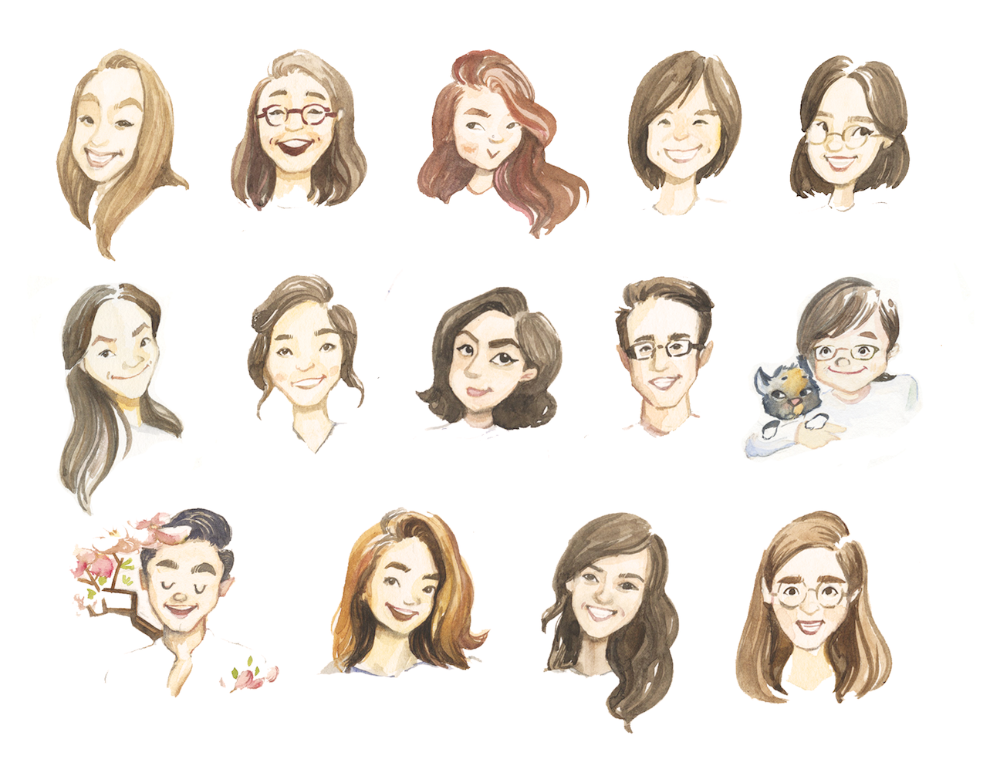

ABOUT
OUR MISSIONS
VISIONS is a publication that highlights and celebrates the diversity of Brown and RISD's Asian/Asian American community. We are committed to being an open literary and artistic forum for Asians and Asian Americans, as well as other members of the university community, to freely express and address issues relating to both the Asian and Asian American experience. VISIONS further serves as a forum for issues that cannot find a voice in other campus publications. As a collaborative initiative, VISIONS attempts to strengthen and actively engage Brown and RISD's vibrant community of students, faculty, staff, and alumni, as well as the larger Providence community and beyond.
OUR HISTORY
VISIONS was spearheaded in 2000 by Dean Kisa Takesue with the intent of:
1) Building a stronger sense of community amongst Asian/Asian American students, staff, faculty, and alumni.
2) Increasing our visibility on campus.
3) Raising awareness about the diversity within Asia and Asian America.
WHAT WE DO
Write. Create. Be seen and be heard. Through articles, poetry, prose, artwork, photography, VISIONS showcases a diverse Asian/Asian American perspective on current issues, politics, art, and history. This is a perspective that is virtually absent from popular American culture and media, and we are proud to be a prominent outlet in the greater Brown and RISD community.
OUR FAMILY
